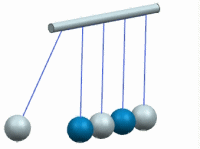

问题
1
2
3
您可以使用哪种运动副来构建如图所示的运动？

请选择一个答案。
假设您正在运动导航器中检查机构的 Gruebler 数，并且它的值为3，Gruebler 数为3表示什么？
请选择一个答案。
当您在运动副定义中指定操作连杆时，为什么您选择的位置(在几何体上或组件上)很重要？
请选择一个答案。
错误！
正确！
理论上，您应该使用共点或球面副来构建这个示例，因为这些类型的运动副都将约束全部平移自由度，而不约束旋转自由度，但是，您也可以使用任何至少约束两个平移自由度，至少剩余一个旋转自由度的运动副。
Gruebler 数是对机构总自由度的预计， Gruebler 数小于零表示机构中存在冗余约束；Gruebler 数等于零表示机构被完全约束，并且不存在冗余约束；Gruebler 数大于零表示机构内自由移动，仍然需要其它运动副/约束/驱动，或者需要进行动力学分析。
为运动副指定操作连杆时，考虑在何处进行选择很重要，因为软件将试图根据您的选择来自动判断运动副的原点和方位。例如，在孔上定义旋转副时，软件将使用圆弧中心作为原点，垂直于该边的矢量作为 Z 轴，运动副绕该轴旋转。